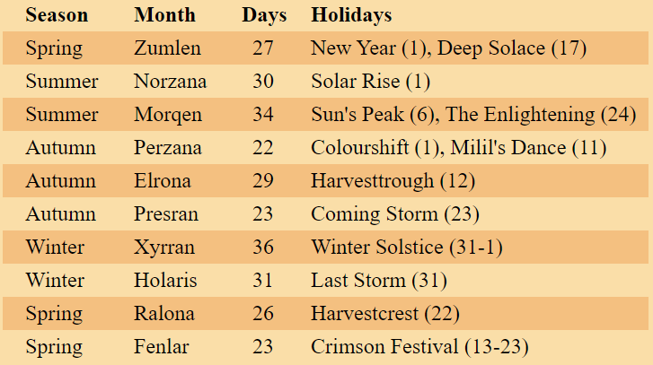

<<< Return to Contents
<<< Return to Trimor
Spring Holidays
Harvestcrest (Ralona 22)
This holiday celebrates the new fruits and harvest that come through during the start of spring. A lot of fresh agriculture is harvested for a gathering in many streets and squares throughout the settlements in Trimor. The day surrounds fun and games that start at noon.
Crimson Festival (Fenlar 13-23)
One of the most important holidays in Trimor is the Crimson Festival. It celebrates how the Crimson Malitia fought back the fiend army attacks, and their victory at the end of the second era. It is also the holy day for Torm. It is celebrated for 11 days leading up until New Year, as this is the time the talks of merging the regions to become Trimor occurred, which happened on the night of the 23rd of Fenlar. Many people have the biggest celebration on the night leading up to New Year.
New Year (Zumlen 1)
The New Year is a celebration to Avandra, the Change Bringer. She encourages a change in one's life for the better, and there is not greater time to promote this than at the start of a brand new year.
Deep Solace (Zumlen 17)
Many dwarves and artisans spend the day in isolation worshipping Moradin, that this holiday seemingly goes unnoticed. They meditate on the meaning of their families, and how they may be better to those around them.
Summer Holidays
Solar Rise (Norzana 1)
This is a general celebration of the beginning of the long summer months. Some people gather outside to play games with one another, and others enjoy delicious banquets of creation.
Sun's Peak (Morqen 6)
The day at which the sun is out the longest is known as Sun's Peak. The monasteries of Pelor use this day to celebrate his warmness and compassion to all those who seek it. In some towns you can find festivities that stretch throughout the streets, with roads leading towards the temple of the Dawn Father.
The Enlightening (Morqen 24)
The All-Seeing one of Savras guides those with the insight that he can provide. Many use his holy day to visit his main temple in Zadaar, where his followers aim to visit at least once in their lifetimes. The Arcane Conglomerate invite those to visit the schools, and also hold a fair to show off recent discoveries or research that is currently be undertaken. Others hold writing competitions, and express their knowledge on the streets.
Autumn Holidays
Colour Shift (Perzana 1)
The colours of reds through yellows are flung high at every township throughout Trimor to celebrate the beginning of autumn. People dress up in these colours and have food and sell items that possess the colours that autumn holds.
Milil's Dance (Perzana 11)
Not long after Colour Shift is the celebration of Milil's Dance. People take part in the arts, with performances taking part in the city centres, bards sing in the streets, and citizens sing thanking Milil for guiding them and others in the way of happiness and friendship.
Harvesttrough (Elrona 12)
The deepest dip in harvest occurs around Harvesttrough, as the seasonal amount of gathered resources significantly reduces as winter draws near. It is not the most celebrated holiday, but people recognise it and pay homage to the farmers that work tirelessly to provide the food for citizens of Trimor.
Coming Storm (Presran 23)
Winter is a long and intense period for some, and Auril does not hold back with the blizzards that mark the start of this dangerous season. Many people have to go indoors to combat these treacherous conditions, often cooking a roast or boil up. Many have succumbed to Coming Storm, Auril likes to make her presence known.
Winter Holidays
Winter Solstice (Xyrran 31 - Holaris 1)
There isn't a lot to celebrate through the cold winter, but some cities hold a festival celebrating the Winter Solstice. Some take time during this week to check up on loved ones, while a large celebration is undertaken in Highgate, where Auril is most present.
Last Storm (Holaris 31)
The significance of the end of winter is different for everyone, especially for Auril. It is her will to unleash a tragic blizzard to mark the end of her season, and if she feel it hasn't gone her way, the last day of winter will not be a pleasant night...